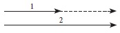

Şimdiye dek söz konusu ettiğimiz bütün hareketler, doğrusal, yani doğru bir çizgi boyunca olan hareketlerdir. Şimdi bir adım daha atmalıyız. En basit durumları çözümleyerek ve ilk çabalarımız sırasında bütün karmaşıklıkları bir yana bırakarak, doğa yasaları üzerine bir fikir ediniyoruz. Doğru bir çizgi, eğri bir çizgiden daha basittir. Bununla birlikte, yalnız doğrusal hareket üzerine bir fikir edinmekle yetinilemez. Ay’ın, Yer’in, gezegenlerin hareketleri, mekanik ilkelerinin büyük bir başarı ile uygulandığı hareketlerdir ve eğri yörüngeler üzerindedir. Doğrusal hareketten eğri bir yol üzerindeki harekete geçmek, yeni güçlükler çıkarır. Bize ilk ipuçlarını vermiş ve böylelikle bilimin gelişimi için çıkış noktasını belirtmiş olan klasik mekaniğin ilkelerini anlamak istiyorsak, bu güçlükleri yenme yürekliliğini göstermeliyiz.
Başka bir düşünselleştirilmiş deney düşünelim: Kusursuz bir küre, düzgün bir masanın üzerinde yuvarlanmaktadır. Biliyoruz ki küre itilirse, yani ona bir dış kuvvet uygulanırsa, kürenin hızı değişecektir. Şimdi, itmenin el arabası örneğindeki gibi hareket yönünde olmadığını ama büsbütün farklı bir yönde, söz gelimi o yöne dik olduğunu varsayalım. Küreye ne olur? Şu üç hareket aşaması birbirinden ayırt edilebilir: Başlangıçtaki hareket, kuvvetin etkisi ve kuvvetin etkisi dindikten sonraki son hareket. Süredurum yasasına göre, kuvvetin etkisinden önceki ve sonraki hareketlerin ikisi de tümüyle bir-biçimlidir. Ancak, kuvvetin etkisinden önceki bir-biçimli hareket ile sonraki arasında bir fark vardır: Yön değişmiştir. Kürenin eski yolu ile kuvvetin yönü birbirine diktir. Son hareket, bu iki çizginin hiçbiri üzerinde olmayacak, ama onların arasında bir yerde, itme sertse ve başlangıçtaki hız küçükse kuvvetin yönüne daha yakın, itme hafifse ve başlangıçtaki hız büyükse hareketin ilk doğrultusuna daha yakın olacaktır. Süredurum yasasına dayanarak çıkaracağımız yeni sonuç şudur: Genellikle, bir dış kuvvetin etkisi yalnız çabukluğu değil, hareketin yönünü de değiştirir. Bu olgunun anlaşılması, bizi vektör kavramı ile fiziğe sokulan genelleştirmeye götürür.
Doğru düşünme yöntemimizi kullanmayı sürdürebiliriz. Çıkış noktamız gene Galilei’nin süredurum yasasıdır. Hareket bilmecesinin çözülmesinde, bu değerli ipucunun bize sağladığı verileri kullanıp tüketmiş olmaktan hâlâ uzağız.
Düzgün bir masanın üzerinde farklı yönlerde hareket eden iki küre düşünelim. Durumu daha iyi göz önüne getirebilmek için, bu iki farklı yönün birbirine dik olduğunu varsayabiliriz. Hiçbir dış kuvvetin etkisi olmadığı için, hareketler tümüyle bir-biçimlidir. Sonra kürelerin çabukluklarının eşit olduğunu, yani her ikisinin de aynı zaman aralığında aynı yolu aldığını varsayalım. Peki ama, iki kürenin hızlarının aynı olduğunu söylemek doğru mudur? Yanıt, evet ya da hayır olabilir! İki arabanın çabuklukölçerleri (speedometer), ikisi de, saatte elli kilometreyi gösterse, arabalar hangi yönde gidiyor olurlarsa olsunlar, çoğu zaman, çabukluklarının ya da hızlarının aynı olduğu söylenir. Ama bilim, kendisine gerekli olan kendi öz dilini ve kavramlarını yaratmak zorundadır. Bilimsel kavramlar, çoğu zaman, alışılagelen dilde günlük olaylar için kullanılanlarla birlikte ortaya çıkar, ama büsbütün farklı bir yolda gelişir. Biçim değiştirirler ve günlük dilde taşıdıkları belirsizliği yitirip kesinlik kazanırlar, öyle ki, bilimsel düşünceye uygun duruma gelirler.
Fizikçinin görüş açısından, farklı yönlerde hareket eden iki kürenin hızlarının farklı olduğunu söylemek yararlıdır. Yalnızca bir söylenegeliş sorunu olmakla birlikte, aynı yol kavşağından ayrılan farklı yollarda uzaklaşan dört arabanın dördünün de çabuklukları çabuklukölçerlerinde saatte elli kilometre olarak gösterilse bile, o arabaların hızları aynı değildir demek, daha uygundur. Çabukluk ile hız arasındaki fark, fiziğin günlük yaşamda kullanılan bir kavramı başlangıç olarak alıp onu bilimin sonraki gelişiminde verimli olduğu bir yolda nasıl değiştirdiğini göstermektedir.[3]
Bir uzunluk ölçülürse, sonuç birtakım birimlerle anlatılır. Bir çubuğun uzunluğu 120 cm; bir nesnenin ağırlığı 990 gram; ölçülmüş bir zaman aralığı birçok dakika ya da saniye olabilir. Bu durumların her birinde, ölçüm sonucu, bir sayı ile bildirilir. Bununla birlikte, tek başına bir sayı, bazı fiziksel kavramları tanımlamaya yetmez. Bu olgunun anlaşılması, bilimsel araştırmada apaçık bir ilerlemeyi belirtiyordu. Örneğin, bir hızın belirlenmesi için, bir yön kadar bir sayı da gereklidir. Yönü ve büyüklüğü birlikte içeren böyle bir niceliğe vektör denir. Vektöre uygun görülen simge, bir oktur.
Hız, bir okla, ya da, kısaca söylemek gerekirse, uzunluğu, belirli bir ölçeğe göre çabukluğun bir ölçüsü, yönü ise hareketin yönü olan bir vektörle gösterilebilir.
Dört araba bir yol kavşağından eşit çabuklukla uzaklaşıyorsa, arabaların hızları, birinci şekilde olduğu gibi, aynı uzunluktaki dört vektörle gösterilebilir. [Şekil-1] Kullanılan ölçekte, 1 cm. 20 kilometre/saati göstermektedir. Bu şekilde de, her hız bir vektörle gösterilebilir, ve bunun tam tersine, ölçek biliniyorsa, hız böyle bir vektör diyagramından anlaşılabilir.
[Şekil-1]
İki araba karayolunda birbiri ile karşılaşsa ve ikisinin de çabuklukölçerleri 50 kilometre/saati gösterse, onların hızlarını okları karşıt yönleri gösteren iki ayrı vektörle belirtebiliriz.
[Şekil-2]
Kente giren ve kentten çıkan yeraltı trenlerini gösteren oklar da karşıt yönlere doğru olmalıdır. Ama farklı duraklarda ya da farklı yollarda kente doğru aynı çabuklukla giden bütün trenlerin bir tek vektörle gösterilebilen eşit hızları vardır. Bir vektörün herhangi bir yerinde, trenin hangi duraklardan geçtiğini ya da birbirine koşut (parallel) kaç demiryolunun hangisinde ilerlediğini gösteren hiçbir şey yoktur. Başka bir söyleyişle, kabul edilen yönteme göre, böyle vektörlerin hepsi, aşağıda çizildiği gibi, eşit sayılabilir; hepsi de, aynı doğru ya da koşut doğrular üzerinde bulunur, hepsinin uzunlukları eşittir, ve son olarak, hepsinin okları aynı yönü gösterir. [Şekil-3]
[Şekil-3]
Dördüncü şekil, hepsi de farklı olan vektörleri göstermektedir; çünkü ya uzunlukları ya da yönleri, ya da ikisi birden, farklıdır. [Şekil-4] Aynı dört vektör, hepsinin de ortak bir noktayı ıraksadığı başka bir biçimde de çizilebilir.
[Şekil-4]
Çıkış noktası önemli olmadığı için, bu dört vektör, aynı yol kavşağından uzaklaşan dört arabanın hızlarını ya da belirli bir yörenin farklı kesimlerinde, gösterilen çabukluklarla ve gösterilen yönlerde giden dört arabanın hızlarını temsil edebilir. [Şekil-5]
[Şekil-5]
Bu vektörle gösterme, şimdi, daha önce tartışılan doğrusal hareketle ilgili olguları tanımlamak için de kullanılabilir. Doğru bir çizgi üzerinde bir-biçimli hareket eden ve hareket yönünde itilerek hızı artırılan bir el arabasından söz etmiştik. Bunu çizgi ile göstermek gerekirse, biri daha kısa ve itmeden önceki hızını gösteren ve öbürü aynı yönde daha uzun ve itmeden sonraki hızı gösteren iki vektör kullanılabilir. [Şekil-6] Noktalı vektörün anlamı açıktır; o, bildiğimiz gibi,

[Şekil-6]
itmeden ileri gelen hız değişmesini göstermektedir. Kuvvetin harekete karşı yöneltildiği ve hareketin yavaşladığı durumda, diyagram biraz farklıdır. [Şekil-7] Noktalı vektör, gene hızdaki bir değişmeye karşılıktır, ama bu durumdaki yönü farklıdır. Yalnız hızların kendilerinin değil, değişmelerinin de vektörel olduğu bellidir. Ama hızdaki
[Şekil-7]
her değişme, bir dış kuvvetin etkisinden ileri gelir; bundan dolayı kuvvet de bir vektörle gösterilmelidir. Bir kuvveti belirtmek için, el arabasını ne kadar saat ittiğimizi bildirmek yetmez; hangi yönde ittiğimizi de söylemeliyiz. Kuvvet, hız ya da hız değişmesi gibi, yalnız bir sayı ile değil, bir vektörle gösterilmelidir. Bundan dolayı, dış kuvvet de bir vektördür ve hızdaki değişme ile aynı yönde olmalıdır. Son iki şekildeki noktalı vektörler, hızdaki değişmeyi gösterdikleri doğrulukla, kuvvetin yönünü de göstermektedir.
Kuşkucu bir kimse, burada vektörlerin işe karıştırılmasında hiçbir yarar görmediğini söyleyebilir. Şimdiye dek yapılan, önceden bilinen olguların alışılmamış ve karmaşık bir dile çevrilmesinden başka bir şey değildir, diyebilir. Bu aşamada onu yanıldığına inandırmak gerçekten güç olurdu. Doğrusu o, şu an için haklıdır. Ama bu garip dilin bizi önemli bir genellemeye götürdüğünü, o genellemede vektörlerin gereğinin ortaya çıktığını göreceğiz.